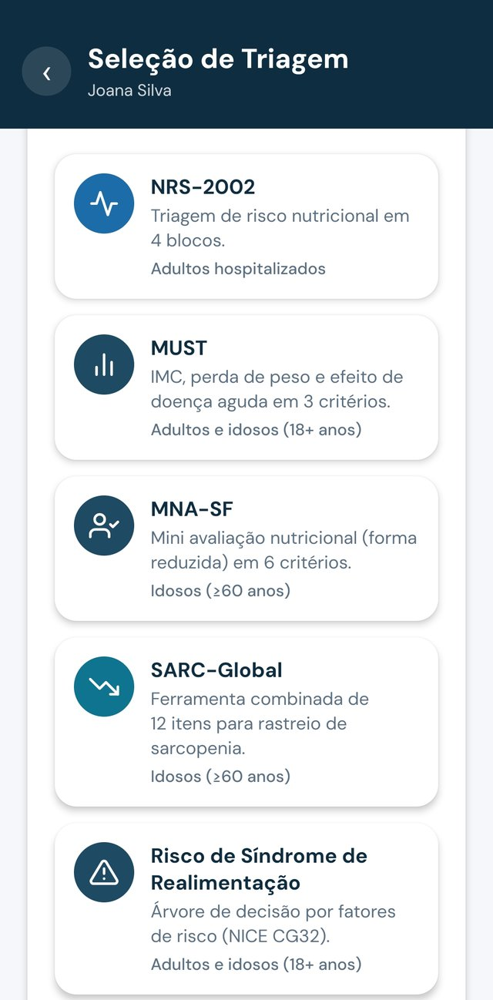
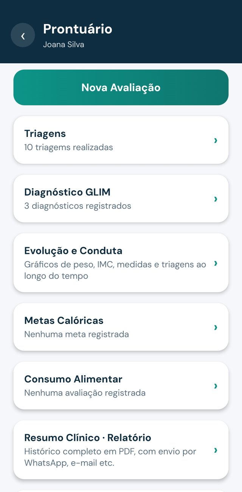

01
Triagens nutricionais
NRS-2002, MUST, MNA-SF, STRONGkids, SARC-Global e Risco de Síndrome de Realimentação, com pontuação e classificação automáticas.
Triagens, avaliação antropométrica, metas e evolução clínica em um só prontuário, com fórmulas conferidas uma a uma com a literatura científica de referência.


Da triagem na admissão ao resumo de alta: o TNCalc substitui planilhas, calculadoras avulsas e anotações em papel por um prontuário organizado por paciente.
NRS-2002, MUST, MNA-SF, STRONGkids, SARC-Global e Risco de Síndrome de Realimentação, com pontuação e classificação automáticas.
Critérios fenotípicos e etiológicos com classificação de gravidade (estágio 1 e 2), segundo o consenso ESPEN.
Estatura e peso estimados, IMC por faixa etária, perda de peso, adequação de CB, CP, amputações e dinamometria.
Pediatria de 1 mês a 17 anos, com percentis OMS 2006/2007 e classificação conforme a norma SISVAN.
Metas calóricas, proteicas e hídricas, consumo alimentar por refeição e evolução clínica em formato de diário.
Histórico completo do paciente, com assinatura e número do CRN, pronto para anexar ao prontuário da instituição.
Todas as equações e protocolos foram conferidos página a página com a literatura de origem: manuais de triagem, livros de nutrição clínica e documentos oficiais da OMS, NICE, FAO/WHO/UNU e DRI.
| Cálculo / protocolo | Referência |
|---|---|
| NRS-2002 | Kondrup, ESPEN 2003 |
| MUST | Stratton, 2004 |
| MNA-SF | Kaiser, 2009 |
| STRONGkids | Carvalho, 2013 |
| Síndrome de Realimentação | NICE CG32 |
| GLIM | Consenso ESPEN |
| Estatura e peso estimados | Chumlea, 1985 e 1994 |
| IMC adulto e idoso | OMS · Lipschitz |
| Adequação de CB | Frisancho, 1990 |
| Amputações | Osterkamp, 1995 |
| Curvas pediátricas | OMS 2006/2007 · SISVAN |
| Necessidade hídrica pediátrica | Holliday-Segar, 1957 |
| Energia e proteína pediátricas | FAO/WHO/UNU · DRI 2005 |
Hospitais, UTIs, home care, ILPIs e ambulatórios podem oferecer à equipe de nutrição a mesma ferramenta, com os mesmos protocolos validados e documentação organizada de cada paciente.
Todos os profissionais usam as mesmas fórmulas e triagens validadas, sem variação de planilha para planilha.
Linha do tempo com avaliações, triagens, metas e evolução, todas datadas.
Resumo clínico em PDF com identificação profissional, pronto para anexar ao prontuário eletrônico do hospital.
Roda no celular ou tablet da equipe. Nada para instalar nos servidores do hospital, e os dados ficam armazenados no Brasil.
Licenças para a equipe de nutrição, com implantação acompanhada e condições sob consulta.
Banco de dados em nuvem Google na região de São Paulo.
Cada nutricionista enxerga apenas os próprios pacientes, com regras no servidor.
Política de privacidade pública, válida no Brasil e na União Europeia.
A conta e todos os dados podem ser apagados pelo próprio usuário, dentro do app.
Experimente com seus próprios pacientes ou agende uma demonstração completa com a nossa equipe.
O TNCalc nasceu da rotina real da nutrição clínica: a necessidade de calcular rápido, com precisão, e registrar tudo sem perder tempo à beira do leito.
É desenvolvido pela Susco, Support Soluções Corporativas Ltda, empresa brasileira de tecnologia com mais de 26 anos de experiência em automação, sistemas e suporte técnico. A validação clínica é conduzida por nutricionista mestre em Nutrição.
Não. Ele organiza a terapia nutricional e gera um resumo em PDF que pode ser anexado ao prontuário oficial da instituição.
Sim. Há STRONGkids, curvas de crescimento OMS e metas pediátricas de energia, proteína e hidratação.
Em servidores no Brasil, acessíveis somente pelo profissional que os cadastrou, conforme a LGPD.
Sim. O plano gratuito permite acompanhar até 3 pacientes com todas as ferramentas clínicas.